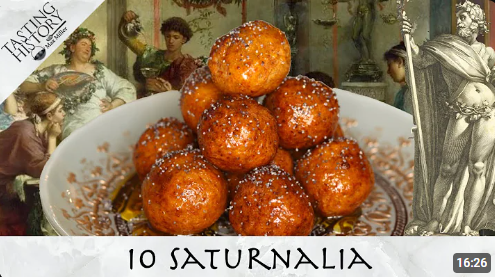

Celebrating Saturnalia with Cato's Globi
Tasting History with Max Miller
817K views
•
3 years ago
The Messed Up Mythology™ of Asclepius, God of Medicine | Mythology Explained - Jon Solo
Jon Solo
217K views
•
2 years ago
The Messed Up Mythology™ of Capricorn | Astrology Explained - Jon Solo
Jon Solo
242K views
•
2 years ago